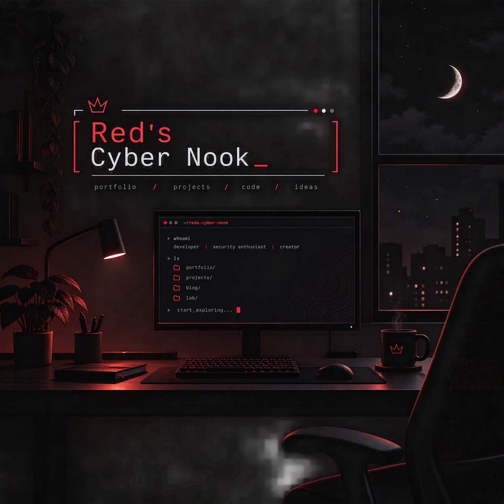

Amari James, SE, CySA, LA. | Certified Software Engineer, Cybersecurity Analyst, and Linux Administrator with experience supporting enterprise IT operations, endpoint security, and software-driven workflow automation. Skilled in incident triage, system diagnostics, secure device management, and developing lightweight engineering solutions to improve operational efficiency. Currently completing renewal training for CySA+ and LPIC‑1.